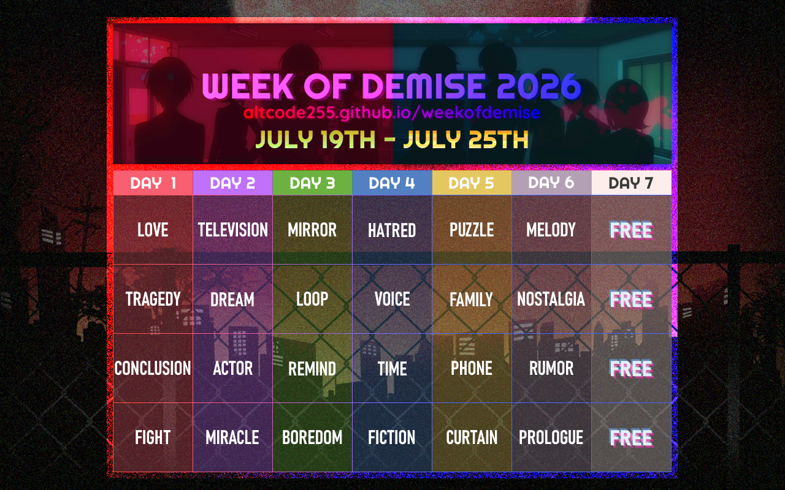
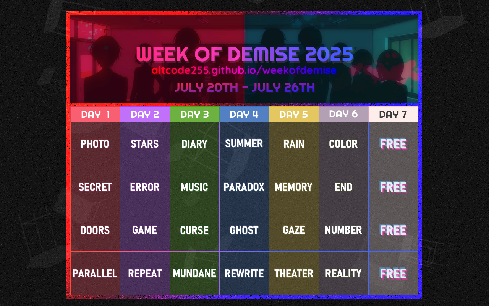
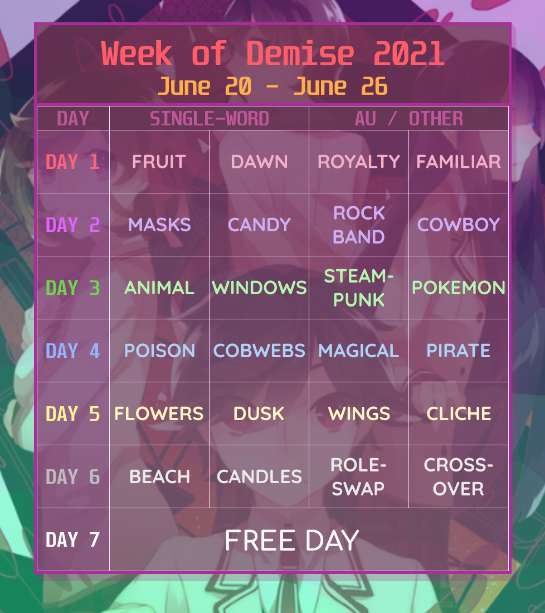
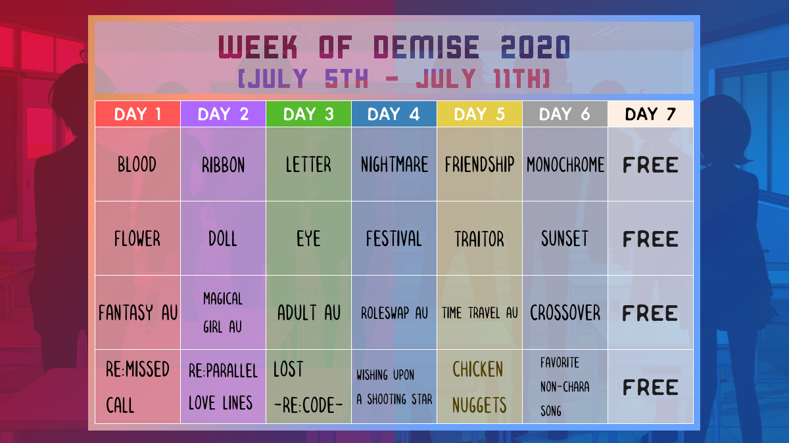
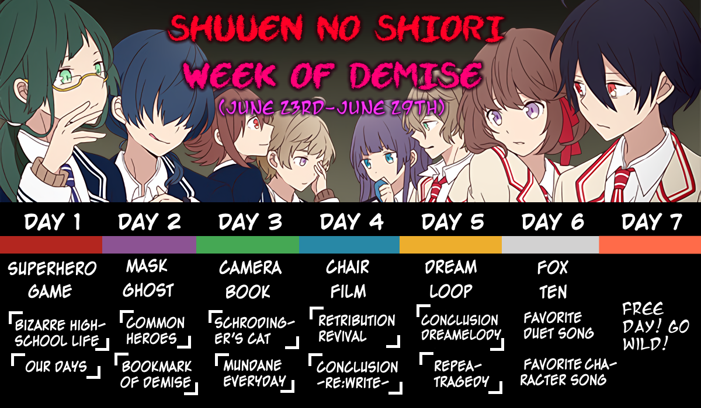

Shuuen no Shiori
WEEK OF DEMISE
JULY 19 - JULY 25
Organized by ALTCODE255
Table of Contents
Information
This is a fan-held art week for Shuuen no Shiori! During this week, participants can create and share artwork corresponding to one or more of the four given prompts per day.
Anyone is free to join, and all forms of artwork* (including visual art, writing, etc.) are welcome! There are no strict requirements for participation.
Participants are free to interpret prompts however they please (no sexually explicit works), and share their artwork in the #week of demise or #weekofdemise tag of any social platform. For written works posted to Archive of Our Own, you may post to the weekofdemise collection.
*Shouldn't have to be said, but please do not share AI-generated or LLM-generated creations for Week of Demise.Click to see infographic; for sharing purposes.
![Shuuen no Shiori
Week of Demise
A fan-held art week for Shuuen no Shiori! During this week, participants can create and share artwork corresponding to one or more of the given four prompts per day.
All forms of artwork (including visual art, writing, etc.) are welcome! Participants are free to interpret prompts however they please (no sexually explicit works), and share their artwork in the #week of demise or #weekofdemise tag of any social platform. For AO3, you may post to the weekofdemise collection.
For more information/updates, visit altcode255.github.io/weekofdemise.](infographic.png)
Current Status (2026): Pending Start on July 19th!
(2026/06/17) Updated the guidelines of the event to specifically disallow sexually explicit artwork as opposed to "NSFW" (too non-descriptive) in general. See the FAQ for more details.
(2026/06/14) I sincerely apologize for the delay in planning Week of Demise this year. This year will be a bit different: there won't be a survey to decide which week the art week is held on. I have decided that Week of Demise will be on the week of July 19th - July 25th. However, as per tradition, I will follow through with dropping the prompt list a month in advance to give artists time to prepare.
Official Posts:Feel free to share the prompt list around on other social media as well!
Prompt Lists
2026

| Day # | Prompt Choices | |||
|---|---|---|---|---|
| 1 | Love | Tragedy | Conclusion | Fight |
| 2 | Television | Dream | Actor | Miracle |
| 3 | Mirror | Loop | Remind | Boredom |
| 4 | Hatred | Voice | Time | Fiction |
| 5 | Puzzle | Family | Phone | Curtain |
| 6 | Melody | Nostalgia | Rumor | Prologue |
| 7 | Free Day | |||
2025

| Day # | Prompt Choices | |||
|---|---|---|---|---|
| 1 | Photo | Secret | Doors | Parallel |
| 2 | Stars | Error | Game | Repeat |
| 3 | Diary | Music | Curse | Mundane |
| 4 | Summer | Paradox | Ghost | Rewrite |
| 5 | Rain | Memory | Gaze | Theater |
| 6 | Color | End | Number | Reality |
| 7 | Free Day | |||
2021

| Day # | Prompt Choices | |||
|---|---|---|---|---|
| Single-Word | AU / Other | |||
| 1 | Fruit | Dawn | Royalty | Familiar |
| 2 | Masks | Candy | Rock Band | Cowboy |
| 3 | Animal | Windows | Steampunk | Pokémon |
| 4 | Poison | Cobwebs | Magical | Pirate |
| 5 | Flowers | Dusk | Wings | Cliché |
| 6 | Beach | Candles | Roleswap | Crossover |
| 7 | Free Day | |||
2020

| Day # | Prompt Choices | |||
|---|---|---|---|---|
| Single-Word | AU | Song / Other | ||
| 1 | Blood | Flower | Fantasy | Re:Missed Call |
| 2 | Ribbon | Doll | Magical Girl | Re:Parallel Love Lines |
| 3 | Letter | Eye | Adult | Lost -Re:code- |
| 4 | Nightmare | Festival | Roleswap | Wishing Upon a Shooting Star |
| 5 | Friendship | Traitor | Time Travel | Chicken Nuggets |
| 6 | Monochrome | Sunset | Crossover | Favorite Non-Character Song |
| 7 | Free Day | |||
2019

| Day # | Prompt Choices | |||
|---|---|---|---|---|
| Single-Word | Song | |||
| 1 | Superhero | Game | Bizarre High School Life | Our Days |
| 2 | Mask | Ghost | Common Heroes | Bookmark of Demise |
| 3 | Camera | Book | Schrödinger's Cat | Mundane Everyday |
| 4 | Chair | Film | Retribution Revival | Conclusion -Re:write- |
| 5 | Dream | Loop | Conclusion Dreamelody | Repeatragedy |
| 6 | Fox | Ten | Favorite Duet Song | Favorite Character Song |
| 7 | Free Day | |||
Frequently Asked Questions (FAQ)
Who are you?
I'm Nameless (they/them)! I've been a fan of Shuuenpro since 2019, and have done a ton of stuff relating to it for the past few years. Most notably, I maintain a Shuuen no Shiori Guide / TL Masterlist website. I also own a Shuuen no Shiori Discord server.
How often is this event held?
Ideally, the Week of Demise is held annually every summer. Realistically, it might not be held every year, depending on my motivation and availability.
Between 2022–2024, I did not plan/organize for Week of Demise mainly because I was busy with college.
I don't draw, but I write fanfiction or create fan works in another form. Can I still participate?
Yes, of course. All art mediums are welcome here. If your work can't be directly shared in a post tagged with #weekofdemise, then include a link to it in your post instead (such as a URL to an AO3 fic).
Additionally, for AO3 in particular, you may post to the weekofdemise collection.
Are pairings / ship art okay?
Yes, you may create ship / pairing artwork for the Week of Demise, so as long as it is NOT sexually explicit.
What do you mean by "no sexually explicit works"?
No sexual intercourse or nudity. No genitalia.
Can I portray blood/gore/violence in my art? What about dark/mature themes?
Yes, considering the existence of darker themes of Shuuen no Shiori. Themes including, but not limited to, interpersonal violence, abuse, mental illness, etc. may be depicted in your artwork.
Out of courtesy for others, please put appropriate content warnings when needed.
Can my artwork feature non-canon characters?
Yes, if you want. As long as the art is Shuuen no Shiori-related to some degree, OCs are totally allowed. The same applies for characters that originate from other works of fiction (e.g. crossover art).
Can I choose more than one prompt a day, or combine multiple prompts into one idea?
Yes! Choose as many prompts as you please.
What if I can't participate every day? / What if I'm not available during the week?
Don't worry about it!
- It's not meant to be a challenge/competition, so participate on the days you want to.
- The prompt list is posted a month in advance so that artists have time to prepare ideas or create artwork beforehand if they want.
- There's nothing wrong with participating late!
What matters most is that you have fun.
What's a "free day"?
Always held on Day 7 of Week of Demise, when no prompts are given. You're free to create/share artwork for whatever you wish and put it under the #weekofdemise tag!
Does it matter where I post to? / Are there social accounts I should follow for updates?
- It doesn't matter, but the places I personally check the most during the event are Bluesky, Tumblr, and Twitter.
-
Tumblr: I will announce stuff on my sideblog @re-code1713.
Bluesky: Under the #shuuenpro tag on my main account.
Twitter: No. I used to put announcements on @shuuenartweek, but I eventually moved off Twitter. There will be no updates to that account.
For the most up-to-date information, you should check this website.
Can I share information about this event on social media?
Yes! The more Shuuenpro fans that know about the Week of Demise, the merrier. I encourage this because I don't have a lot of energy to crosspost across sites. When sharing information or prompt lists, please link to this web page when possible.
Links
- Tumblr: #week of demise | #weekofdemise
- Bluesky: #weekofdemise
- Twitter: #weekofdemise
- Archive of Our Own (collection): weekofdemise